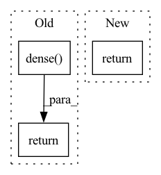

Pattern ID :3883
Before Change
def forward(self, x):
batch_size = x.shape[0]
x = x.reshape((batch_size, -1)).float()
x = F.relu(self.dense( x) )
x = F.softmax(self.logits(x), dim=-1)
return xAfter Change
if apply_softmax:
y_pred = F.softmax(y_pred, dim=-1)
return y_pred
In pattern: SUPERPATTERN
Frequency: 4
Non-data size: 3
Instances Fragment ID: 14690529
Project Name: bioshape-lab/pirounet
Commit Name: 149d8ab584d8a5bd20c5f508a727bb53b470cc0f
Time: 2022-05-17
Author: papillon@umail.ucsb.edu
File Name: move/classifiers.py
M Class Name: TransformerClassifier
N Class Name: TransformerClassifier
M Method Name: forward(4)
N Method Name: forward(2)
M Parent Class: PositionalEncoding
N Parent Class: nn.Module
M File Name: move/classifiers.py
N File Name: move/classifiers.py
M Start Line: 36
M End Line: 42
N Start Line: 72
N End Line: 87
Before Change
out, feature_list = self.discriminator_block(out)
out = out.view(out.size(0), -1)
out = self.dense( out)
return out, feature_list
def forward_sequence(self, data, args_dict):
// ------------ setup params ------------ //After Change
def forward(self, data, args_dict):
out = self.forward_sequence(data, args_dict)
return out
def step(self, x):
out = self.conv_in(x) Fragment ID: 14690530
Project Name: skycrapers/tecogan-pytorch
Commit Name: ca75b1162e02809d6300343eec0b776ef3f987e2
Time: 2021-07-17
Author: dengjn@zju.edu.cn
File Name: codes/models/networks/tecogan_nets.py
M Class Name: SpatialDiscriminator
N Class Name: SpatialDiscriminator
M Method Name: forward(3)
N Method Name: forward(2)
M Parent Class: BaseSequenceDiscriminator
N Parent Class: BaseSequenceDiscriminator
M File Name: codes/models/networks/tecogan_nets.py
N File Name: codes/models/networks/tecogan_nets.py
M Start Line: 480
M End Line: 486
N Start Line: 484
N End Line: 486
Before Change
out, feature_list = self.discriminator_block(out)
out = out.view(out.size(0), -1)
out = self.dense( out)
return out, feature_list
def forward_sequence(self, data, args_dict):
After Change
def forward(self, data, args_dict):
out = self.forward_sequence(data, args_dict)
return out
def forward_sequence(self, data, args_dict):
Fragment ID: 14690531
Project Name: skycrapers/tecogan-pytorch
Commit Name: ca75b1162e02809d6300343eec0b776ef3f987e2
Time: 2021-07-17
Author: dengjn@zju.edu.cn
File Name: codes/models/networks/tecogan_nets.py
M Class Name: SpatioTemporalDiscriminator
N Class Name: SpatioTemporalDiscriminator
M Method Name: forward(3)
N Method Name: forward(2)
M Parent Class: BaseSequenceDiscriminator
N Parent Class: BaseSequenceDiscriminator
M File Name: codes/models/networks/tecogan_nets.py
N File Name: codes/models/networks/tecogan_nets.py
M Start Line: 352
M End Line: 358
N Start Line: 361
N End Line: 363
Before Change
def forward(self, x):
Forward method
return self.dense( x)
// Wrapped Value Model:
class WrappedCartpoleValueNet(nn.Module):After Change
value = self.value_net(x)
value_dict = {"value": value}
return value_dict
def train(): Fragment ID: 14690532
Project Name: enlite-ai/maze
Commit Name: 0c469de9f9e6276867247b9c3216e2096c41322b
Time: 2021-03-18
Author: office@enlite.ai
File Name: docs/source/best_practices_and_tutorials/code_snippets/plain_python_training.py
M Class Name: CartpoleValueNet
N Class Name: CartpoleValueNet
M Method Name: forward(2)
N Method Name: forward(2)
M Parent Class: nn.Module
N Parent Class: nn.Module
M File Name: docs/source/best_practices_and_tutorials/code_snippets/plain_python_training.py
N File Name: docs/source/best_practices_and_tutorials/code_snippets/plain_python_training.py
M Start Line: 76
M End Line: 78
N Start Line: 75
N End Line: 83